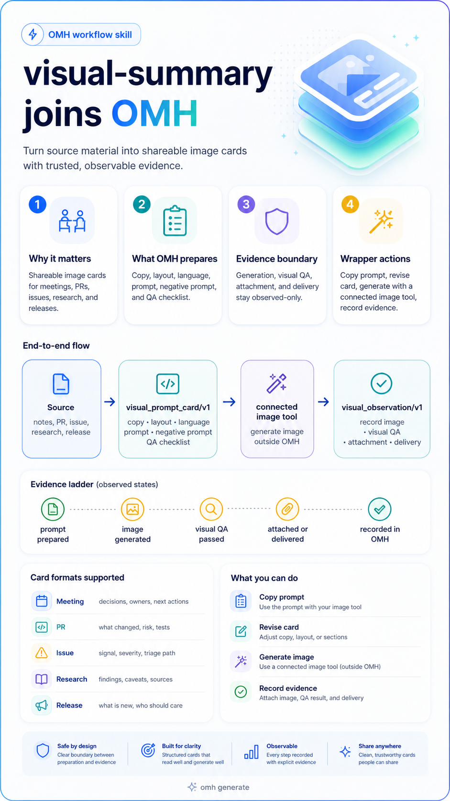

Meeting notes
Decisions, owners, blockers, and next actions for team follow-up.
Flagship lane
visual-summary helps Hermes prepare image-generation
prompt cards for meeting notes, reports, GitHub PRs, issues,
research briefings, and release updates. OMH shapes the card before
a connected image tool runs, then records image generation, visual
QA, attachment, and delivery only when those events are observed.

The visual system is not one fixed grid. OMH selects a visual format and aspect ratio that match the source, then keeps the shared proof structure stable: summary, key points, why it matters, next action, caveats, and observed evidence.
Decisions, owners, blockers, and next actions for team follow-up.
Long-scroll digest cards for metrics, observations, caveats, and actions.
What changed, risk, tests, reviewers, and merge readiness for sharing.
Signal, severity, reproduction path, owner, and triage decision.
Findings, source quality, disagreement, caveats, and what to verify.
What is new, who should care, upgrade notes, and confidence level.
Hermes can use this lane when a chat summary needs to become a shareable visual. The wrapper can show the prompt card, copy the prompt into an already connected image tool, then record what happened back into OMH.
Normal users should ask Hermes for the card in chat. Operators and wrappers can call the deterministic backend to preview the exact contract shape without contacting an image provider.
omh visual prompt-card --kind github_pr --section summary:What_changed:Setup_copy_now_matches_the_site
omh visual prompt-card --kind report --section summary:Executive_summary:Weekly_metrics_changed
omh visual observe --card-id <id> --type generated_image_observed --path ./card.png --summary "Generated with connected image tool"
The first two commands prepare visual_prompt_card/v1.
They are not generated image evidence. The observation command records
one explicit event after the external image step actually happens.